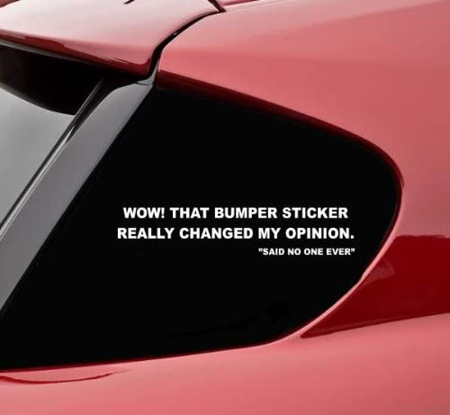

about
“Kaizen” is a Japanese word that means “on-going improvement.” Once I figured out that I was bad at school because I have ADD and not because I’m a bad person, I grabbed ahold of kaizen and have never let go.
Which is good, because I am endlessly curious and a bit neurotic about being the best version of myself. If my nose isn’t in a book, it’s because my ears are being serenaded by a sweet, sweet podcast or I’m reading a research article or watching a documentary.
My specialty lies in diving deep into topics and extrapolating the essentials, disseminating what I find to those around me who would likely never encounter it. After years of being told that I should collect my findings into a book, it occurred to me that I had unknowingly been doing that for the last 15 years in the form of angry unsent emails to my Uncle David. I don’t like conflict, so I never hit send on those snarky rebuttals to the heinous Alex Jones links he’d forward to me on Facebook — but boy did it feel good to prove him wrong…
Then I started to wonder if he was wrong. Well… no, there were definitely things about which he was wrong — but why? How was it that two people from the same town, of the same race and gender, from the same family, came to view the world so differently? It’s a combination of curiosity, kaizen, and the desire to leave the world better than I found it that led me to start writing Letters to Uncle David.
As a former social studies and special education teacher, I am trained to tailor information to different audiences and saw an opportunity when even the educated and privileged around me had never heard of the topics discussed in my book. From my studies in public health, I became aware of the complexity of human behavior, and I decided that instead of writing off half of the country I’d do better to figure out what’s beneath their seemingly irrational, hypocritical antics.
So, there you have it. My heart on my sleeve. Don’t go easy on me. But don’t write me off, either.
To speak with me directly, join my Facebook group.
To watch me sing and dance as part of my day-job, visit my acapella group, ReVoiced, at musicrevoiced.com and @musicrevoiced.